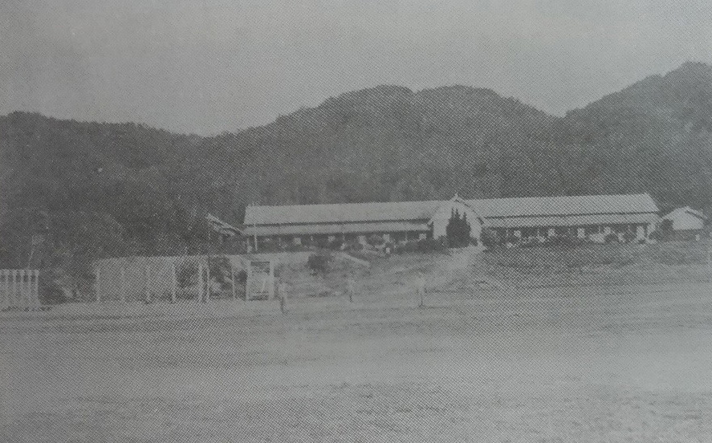
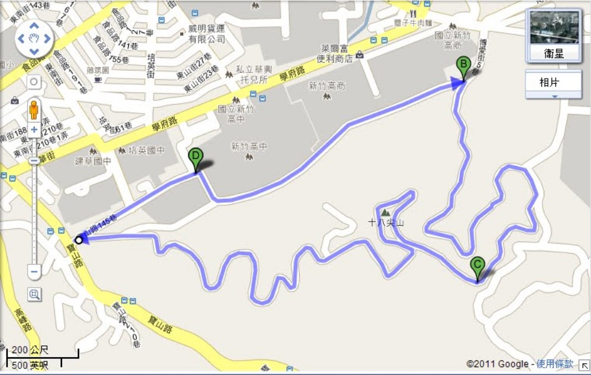
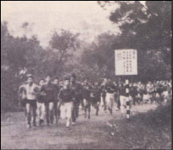
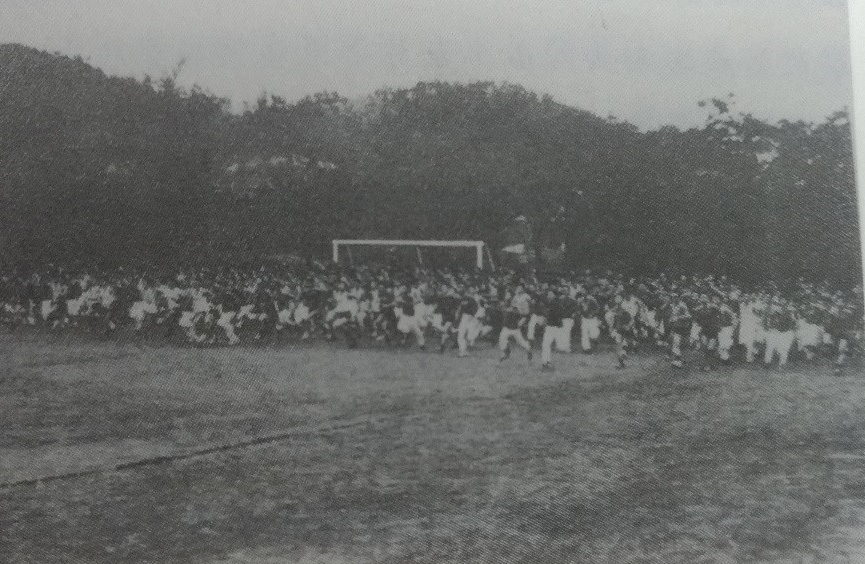
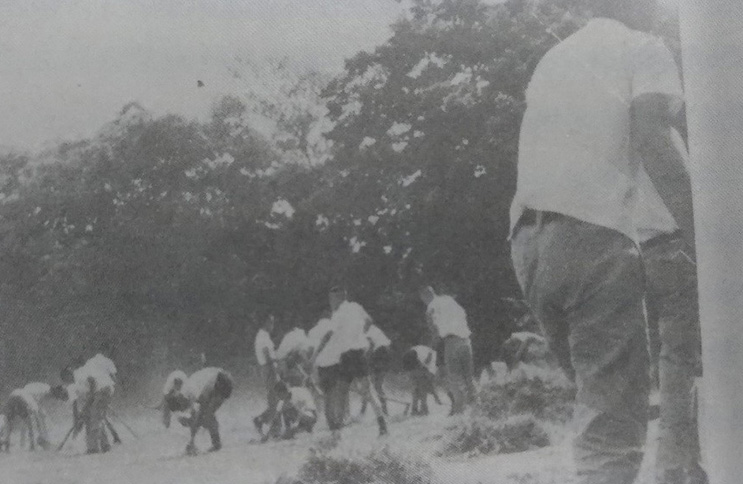

州立新竹中學校教室(左)及學寮(右)後的丘陵即是十八尖山主體
東山入歌
一九四二年（昭和十七年）創校屆滿二十年，十月廿五日這一天，七百名竹中在校生隨著師長以及一千二百名畢業生中的代表，在東山山麓舉行創立二十週年記念慶典。而在此之前，已陸續展開多項慶祝活動，如設立「記念東山文庫」，發表第二校歌、闢建「記念庭園」等。其中第二校歌是由同年四月一日到任的松井實校長（第五任竹中校長）作詞，詠讚晨曦映照下的東山，竹中健兒齊聚修文練武，力行質實真摯剛健的校訓，承擔國家社會的歷史使命，昂揚前進，鵬程萬里。同年入學的第二十一回范秉肇校友曾將之意譯如下：
飄揚紫色彩雲 晨曦映照東山 質實剛健校風 誓願力行發揚 純淨學子英姿
白浪湧向南寮 夕陽映射天邊 砥礪修文練武 大鵬飛翔天空 一展前程萬里
開啟國家歷史 崇高無雙使命 莘莘竹中健兒 軒昂爭先肩負 指日即將達成

背倚十八尖山的學寮
同時紀念活動也進行學寮「寮歌」募集活動，自全部五十三篇應徵作品中選出一名正選及另三名佳作入選，這些作品均以東山懷抱下，朝夕研學修養的住校生涯來著墨，發抒竹中健兒的昂揚意氣。
越野賽跑
竹中一年一度的越野賽跑，最早可以追溯到日治時期。學校體育教學內容之一的團體驅步是除了每週一次的劍道、野球（棒球）等之外的另一項重點，夏天裡赤著上半身跑過十八尖山，東山成為竹中健兒最佳的鍛鍊場所。(日據時期就稱這學校的後山為「東山」) 台灣光復後，辛志平校長接掌竹中，繼續實施，一方面作為體育競賽項目即「越野賽跑」，同時也列入體育科成績考查項目之一，不及格者要補考重跑，還在正式比賽前一個月左右，利用朝會時間練習跑操場數圈，逐漸增加圈數距離，最後才在第一學期期末正式比賽，年年如此，成為竹中人的「全民運動」。跑步路線則歷經多次的調整，最後採取跑十八尖山的路線，一直到現在。
校友回憶
范秉肇校友見証了「團體驅步」，就是繞山一週：
每週六第四節，學生穿制服、打綁腿，由老師帶隊，高年級在前，低年級跟隨在後，各班成四路縱隊，以相同速度，由現在的博愛街新竹商校旁跑上十八尖山，再從寶山路、食品路回校，這條路線也成為現今竹中越野賽跑的路線。

廿四屆的潘震澤校友（民國六十年畢業）道出同樣的經驗：
『像越野賽跑在每年秋季舉行，從高一到高三除了殘障帶病者一律都參加，按年級距離有所不同。每次比賽前一個月，早晨朝會升旗畢，便由體育老師帶領由短距離練起，大抵是出校門從東山街繞孔廟一圈而回，正式比賽的場地則是走學校後面十八尖山的環山公路。讀者可以想像每天清晨七點半，兩千多名的學生奔馳而出的壯觀景象，真是開「早安晨跑」的風氣之先了。』

越野賽跑開跑，齊奔十八尖山
第廿六屆（民國六十二年畢業）的孔維勤校友回味著竹中生活說： 記得每次越野賽跑，一大群同學在操場上集合，一聲槍響，烏鴉鴉的同學往校門衝，經過市郊，進入十八尖山的山道，到山道上同學已經錯錯落落了，意志力的考驗很快的決定快慢。尤其到最後衝刺的時候，搶前幾名的一馬當先。若等到校門口的紅旗一放下，還沒跑回終點的同學就決定補考再來一次的命運，新竹中學的越野賽跑，規模之大，場面之隆重，這又是它維持校風的傳統之一。每一位經過三關的同學，雖然跑在十八尖山迂迴起伏的山路上那麼辛苦，當辛苦化為汗珠，化為回憶，在別人面前，又有一番可說的往事了。
勞動教育
大正十五年、新竹中學校在建校第五年，校舍由東門外移轉到十八尖山下，當時市役所對新學校寄予深切期望，認為此後十八尖山為「中學校的大庭園，數百名健兒在此開拓補理，不僅可以照顧到荒廢已有的林野，同時可以防止民眾不時瀾伐林木」，對學生而言，十八尖山是學校後山，也是校園的一部份，如學生實習勞動的三千六百坪園藝菜埔，由山坡伸到校內，學校與後山沒有圍籬的限制。早期校友對此留有深刻的印象。
舊制十四回柿原朋之老校友說:
『三年級的夏天，我寄宿學校之時，學校舉辦勞作服務。從學校的北面，到山上的斜坡地，開墾種植菜園，這是我們課程中的農業課目。在這個課目中，學校裡從日本岩手縣的小岩井農場，聘請了一位老師。他認真而又嚴格地教導我們如何使用鋤頭、鐮刀，以及肥料的配方、施肥的方法，與蔬菜種類的種植法等等，並要求我們實地的實習。那時實地實習的知識與經驗的啟示，也奠定我現在的事業基礎。』
『我們學校後山的樹上，也有草菇，我和同學也經常上山去摘採。夏天蟬叫的聲音很大，當課餘休息之時，我和同學去捉來遊玩，其樂無盡。』
〈中學生時代的回憶〉

東山下新生勞動服務
名作家蔡詩萍回憶其高中生活時表示: 在當時的聯考體制之下，實在很難想像自己竟然會進入一所校風如此自由開放的學校。「進入新竹中學之後，我才發現原來學校沒有圍牆，也就是說，你隨時都可以從四面八方溜出校園！此外，學校採取不點名制度，學生有很多理由翹課，午休的時候大家都可以自由活動，因此每到午休，我們都會跑到學校後面的十八尖山遊玩。高一的時候，我就感覺自己身在一個宛若大學的環境。」 回顧上述幾點，十八尖山作為新竹中學學生學習的一個重要場域，從體育教育、勞動教育到自由學習氛圍的營造，東山儼然在竹中學生的心中形成一個不可磨滅的象徵意義。